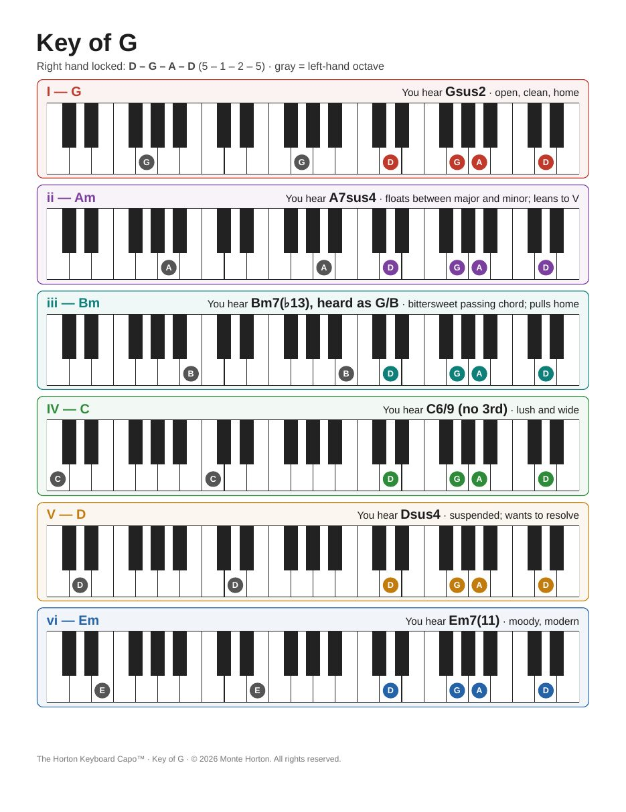

Monte Horton / Creative Arts
A worship piano method by Monte Horton
Your left hand moves. Your right hand doesn't.
A guitarist puts a capo on and plays open, ringing chords without thinking about it. The Horton Keyboard Capo gives a keyboard player the same sound: lock one four-note shape in your right hand, play root octaves with your left, and let the harmony take care of itself.
Your right hand finds scale degrees 5 – 1 – 2 – 5 of the key and stays there. In the key of G that's D – G – A – D, played with fingers 1 – 2 – 3 – 5. It doesn't move for the rest of the song.
Your left hand plays the root of each chord in octaves. Because the right hand never changes, every chord picks up the same open, suspended color: sus2s, sus4s and 6/9s instead of plain triads.
| Chord | Left hand | What you hear (key of G) |
|---|---|---|
| I | G | Gsus2 — open, clean, home |
| ii | A | A7sus4 — floats; leans to V |
| iii | B | Bm7(♭13), heard as G/B — a passing chord |
| IV | C | C6/9 (no 3rd) — lush and wide |
| V | D | Dsus4 — wants to resolve |
| vi | E | Em7(11) — moody, modern |
The vii° chord is the one exception. Over the locked shape it clashes, and contemporary worship rarely uses it anyway.

Guitar-playing worship leaders moving to keys. You already know the root of every chord, and your ear already expects that open, capo'd sound. The only new thing to learn is one right-hand shape.
Keyboard-playing worship leaders. It simplifies your accompaniment: one hand shape for the whole song instead of a new voicing on every chord. And because the locked shape produces the same sus2 and add9 colors an acoustic guitar makes, your keys sit with acoustic-guitar-driven songs instead of fighting them.
The introduction plus the full key-of-G page from the visual reference, all six chords diagrammed. Print it and put it on your music stand.
Download the free sample (PDF)Thirteen pages: the introduction plus one page per major key, in circle-of-fifths order, with correct sharps and flats in every key. Lessons and church team training are also available.
Email me for the full referenceAbout this method. The Horton Keyboard Capo™ is an original piano method created and developed by Monte Horton. When you teach it, share it or adapt it, please credit it as "The Horton Keyboard Capo™ method, created by Monte Horton." The Horton Keyboard Capo™ is a trademark of Monte Horton. © 2026 Monte Horton. All rights reserved.